MET — Mission Elapsed Time
A simple stopwatch that starts at launch and never stops — the universal time tag for every event in the mission timeline.

101 · zoom in
MET stands for Mission Elapsed Time. It's a stopwatch. Day zero, hour zero, minute zero, second zero is the moment the rocket leaves the pad. Everything that happens after that gets tagged with MET. Apollo 11's first step on the Moon? MET 109 hours 24 minutes. Voyager 1 crossing into interstellar space? MET 35 years.
Why a stopwatch instead of a normal calendar? Two reasons. First, calendars on Earth have nothing to do with what the spacecraft is doing — Voyager doesn't care about Tuesdays. Second, the further out you go, the more clocks drift apart. Mars is light-minutes away; signals lag. Spacecraft doing relativistic speeds (some of them) measure time slightly differently than we do. MET sidesteps all that — it's the spacecraft's own private timeline.
Open the /fly screen and watch MET tick up in days as a simulated trip progresses. The HUD says MET 173d when the spacecraft swings past Mars. Translation: it's been 173 days since launch from the spacecraft's perspective. What date is it on Earth? Doesn't matter. Mission control speaks MET.
MET is the time since launch. Day zero is liftoff. Every event — staging, trans-X injection, mid-course correction, orbit insertion, surface ops — gets a MET timestamp. Apollo 11 lunar landing: MET 4 days, 6 hours, 45 minutes. Voyager 1 leaving the heliopause: MET 35 years.
Why MET instead of UTC? Because clock-on-Earth doesn't quite match clock-on-spacecraft when the spacecraft is moving fast or far. Light-time delays grow (Mars is 4-22 light-minutes away depending on the orbital geometry). Relativistic dilation creeps in for fast probes. MET is the spacecraft's own elapsed time, the natural anchor for sequencing onboard events.
On `/fly`'s HUD you'll see MET tick up in days as the simulation progresses. It's the spacecraft's perspective on how long the journey has taken — independent of what date it is back on Earth.
SEE IN THE APP
- /fly /fly's HUD shows MET in days since launch